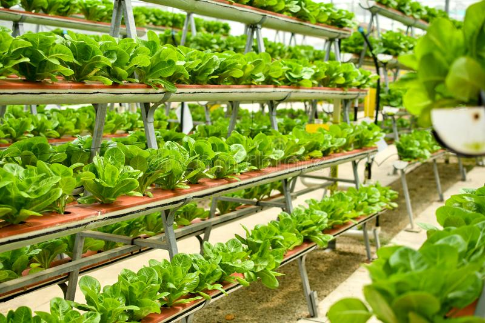

- Product innovations
- Digital marketplaces
- Operations software
- Skills-building tools
- Resources
There is a requirement for innovation in products. Those products which are growing from olden times that need to be updated. For that, new technologies introduced in the market which are designing fully new kinds of foods. Those products which are impossible to grow are tested in lab-grown.
The government of India started an eNAM facility for the farmers of India. The eNAM (National Agriculture Market) is an electronic trading portal which creates networks between the existing APMC mandis for the farmers all over India. Its main aim is to promote equality in the agriculture market. From this plan smoothness between the buyers and sellers created and it promotes real time price too.
And digital marketplace permits farmers to lease equipment, connect to local customers, or pool together for superior insurance.
It will help farmers to make better and operation decisions, save money, track resources or productivity
In Indian farming, there is a need for skill building. Farmers produce which they learnt from their parents or ancestors. They don’t know how to use these newly introduced technologies. For that skill building tools should be introduced in the market for the farmers.
It includes hotline voice services, videos, mobile apps and others. These tools help farmers to share experiences and learn new and innovative things. In France, AgriFind is a social networking place to ask questions and advice for the farmers
There is a need to utilize resources fully. New irrigation systems in India provide highly targeted fertilizer and water. It is best for urban and vertical farms. In these methods, there used less use of water and soil. That reduces pesticides too.
SMART FARMING IDEAS
Smart farming connected with innovation. Indian agriculture is facing huge challenges these days. There is an urgent need to accelerate agriculture by smart farming ideas. Around the last 10 years, huge growth noticed in agriculture technology investment. In the last 5 years, investment was $6.7 billion, and in the last year alone, it was $1.9 billion. These investments take place to enhance Indian farming. We are presenting some smart farming ideas that will guide you ‘How to become a smart farmer’ . Have a look.
-

- Indoor Vertical Farming
- Farm Automation
- Livestock Farming Technology
- Modern Greenhouses
- Precision Agriculture
- Blockchain
- Artificial Intelligence
Indoor vertical farming is the procedure of growing plants in closed and controlled environments. With this method, plants mounted vertically, and it takes less land space to grow compared to traditional farming. Vertical farms don’t require soil for plants to grow, and in this method, the labour force reduced too. It is the best and the first smart farming technique in India.
Farm automation is the up gradation in farming machines and equipment. To accomplish this, companies are working on this. They are working on autonomous tractors, automatic watering, develop drones, robotics innovation, and seeding robots. The companies not only provide quality innovative machinery but make these machines affordable for the farmers.
Livestock provides much needed products, and in our country, livestock is the most ignorant part of farming. New innovations over the 8 to 10 years created huge changes and improvements to the industry. It helps in managing and tracking livestock easily and comfortably. These technologies come in genetics, nutritional technologies, digital technology, and more.

Indian agriculture witnessed an increase in the greenhouse in large scale. It is urban centred and capital infused. As the market demand increases dramatically, the trend of the greenhouse is increasing in recent years. A modern greenhouse is now becoming automated control systems, tech-heavy and using LED lights for growing environment.
Recent precision agriculture companies are introducing technologies that permit Indian farmers to boost production. It is done by controlling pest stress, micro-climates, moisture levels, and soil conditions. In precision agriculture, farmers get appropriate techniques for growing crops and planting that enhance efficiency and income.
Blockchain used to resolve important issues, including food traceability, supply chain inefficiency, safety recalls, and food fraud in the food system. It creates a market for premium products with verification and transparency. This verifies transactions that are securely shared with every seller or not. It helps in creating transparency in the marketplace and food supply.

With the increase in digital agriculture and technologies, opportunities for the farmers increased too. Farmers can gather 24 hours of information by UAVs, satellites, and remote sensors. All these technologies can monitor the health of plants, temperature, soil condition, humidity, etc. Now farmers can get a better understanding of the ground of innovative technologies. These can help them to improve productivity.